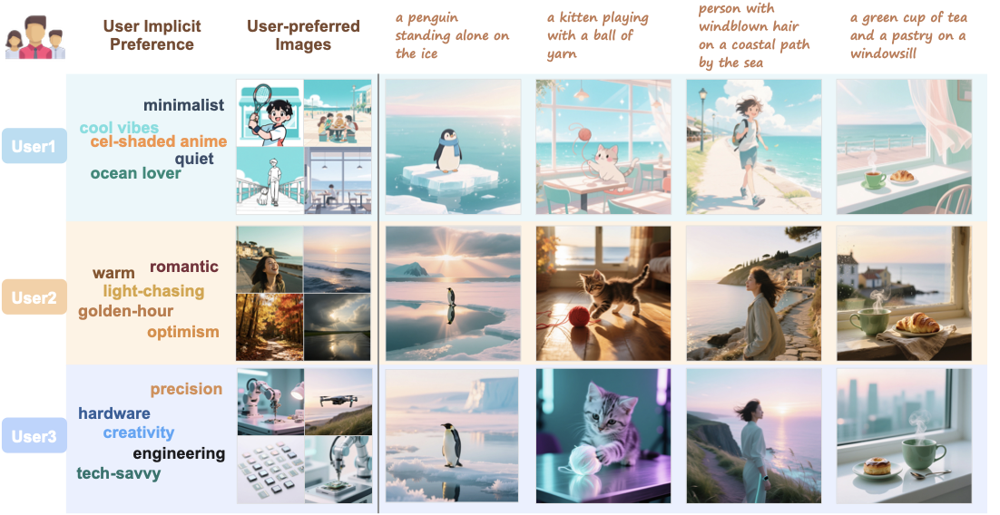
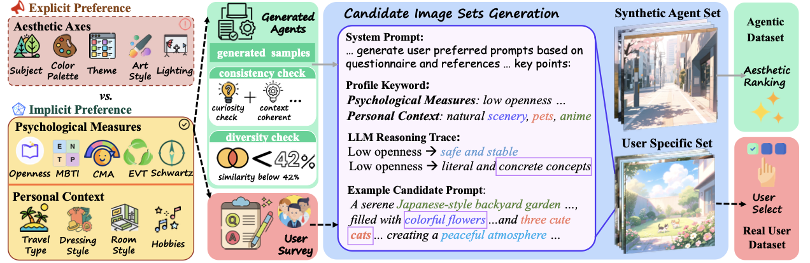
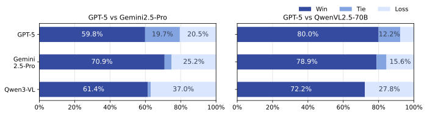
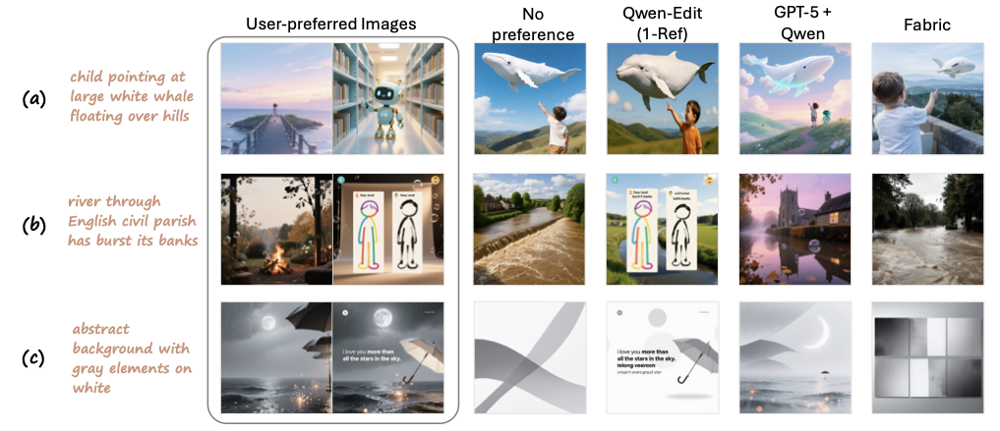

Profile-inclusive benchmark
Real user profiles pair demographic, psychological, and contextual signals with selected preferred images.
ECCV 2026

Recent text-to-image models excel at following diverse prompts, but they remain largely blind to individual aesthetic preferences. PIPBench studies personalized image generation, where a model must align outputs with a user's implicit visual preferences given a few historically preferred images and a short prompt.
The benchmark introduces a profile-inclusive data construction pipeline that uses psychological and demographic profiling dimensions for real-user collection and scalable synthetic-agent generation. Experiments on representative methods reveal clear limitations in current preference-conditioning strategies and point to new opportunities for personalized text-to-image synthesis.
Key Contributions
The benchmark makes implicit visual preference measurable by pairing user profiles, preferred images, and prompt-conditioned targets.
Real user profiles pair demographic, psychological, and contextual signals with selected preferred images.
Survey-calibrated real-user records are complemented by consistency-filtered synthetic agents for scale and diversity.
Automatic metrics are paired with persona-aware Elo judging, so subjective preference fit is evaluated directly.
Representative conditioning strategies expose open challenges in multi-reference reasoning and prompt-preference balance.
Problem Setting
Each testcase asks a model to satisfy an explicit prompt while inferring latent visual taste from reference images.
A short caption focuses on the primary visual content rather than exhaustive style instructions.
Up to five historically preferred images provide signals for color, composition, mood, subject, and style.
The generated image should remain faithful to the prompt while matching the user's underlying preferences.
Benchmark Construction
PIPBench combines costly real-user calibration with scalable synthetic-agent construction, using the same profiling schema to keep both parts comparable.

Collect psychological measures and personal context that can shape visual preferences.
Use profile-conditioned LLM reasoning to produce image prompts and candidate sets.
Real users pick matching images; synthetic agents rank candidates automatically.
Each testcase pairs a short prompt with reference preferences and a target image.
Built from a 19-item questionnaire and a second-stage preference selection process. Users choose 6-8 preferred images from generated candidate sets, producing human-calibrated records.
Scales benchmark coverage by sampling profile-consistent agents and ranking candidate images automatically, while preserving population diversity through rule checks.
Evaluation
Automatic metrics track instruction fidelity and reference alignment, while persona-aware Elo evaluates subjective fit under a user profile.
CLIP text-image similarity for prompt fidelity.
Perceptual distance to the user's reference images.
CLIP and DINO image-image similarities for reference alignment.
Pairwise LLM-as-a-judge comparisons conditioned on full user profiles, with about 91% agreement against human annotations.

Results
Preference-aware methods generally improve alignment over a no-preference baseline, but multi-reference understanding and prompt-preference tradeoffs remain open problems.
GPT-5 fusion gains +338 Elo over the no-preference baseline.
Best real-user DIS-R, an 83% relative increase over no-preference.
Two-reference editing trails one-reference editing in Elo, showing current fusion limits.
| Method | Synthetic Agent | Real-User | |||||
|---|---|---|---|---|---|---|---|
| LPIPS-R ↓ | CLS-R ↑ | DIS-R ↑ | LPIPS-R ↓ | CLS-R ↑ | DIS-R ↑ | Elo ↑ | |
| No preference | 0.7559 | 62.784 | 10.195 | 0.7448 | 62.761 | 12.099 | 1427 |
| DreamBooth | 0.7374 | 63.444 | 10.705 | 0.7265 | 63.751 | 12.720 | 1452 |
| Qwen-Image-Edit (1-Ref) | 0.7326 | 64.615 | 15.461 | 0.7209 | 65.802 | 18.459 | 1521 |
| Qwen-Image-Edit (2-Ref) | 0.7652 | 62.319 | 12.259 | 0.7511 | 65.023 | 16.821 | 1354 |
| GPT-5 fusion | 0.6977 | 68.119 | 17.085 | 0.6867 | 69.574 | 22.160 | 1765 |
| Gemini 2.5 Pro fusion | 0.7038 | 67.335 | 14.403 | 0.6910 | 69.174 | 20.090 | 1615 |
| QwenVL2.5-70B fusion | 0.7183 | 65.894 | 17.336 | 0.7092 | 66.835 | 20.282 | 1531 |
| Fabric | 0.7277 | 64.531 | 13.367 | 0.7222 | 64.590 | 15.463 | 1412 |
GPT-5 fusion obtains the highest real-user Elo and the best preference-alignment metrics among representative methods.
Qwen-Image-Edit with two references underperforms its one-reference variant, showing that current models struggle to jointly interpret multiple preference examples.
Training on profile-inclusive synthetic data improves real-user alignment over profile-free data, including a 52.4% persona-aware win rate.
Visualization
Preference-aware models add style and semantic traits beyond the short prompt, but can also overfit to an individual reference or conflict with instruction fidelity.

The dataset and repository are available for reproducing benchmark construction, evaluation, and future personalized image generation research.
@inproceedings{wu2026pipbench,
title={PIPBench: A Profile-Inclusive Framework for Personalized Image Generation Evaluation},
author={Wu, Yuhang and Zhang, Shuxiang and Ching, Wee Hian and Zhang, Chi and Liu, Miao},
booktitle={European Conference on Computer Vision (ECCV)},
year={2026},
url={https://github.com/wuyuhang05/PIPBench}
}